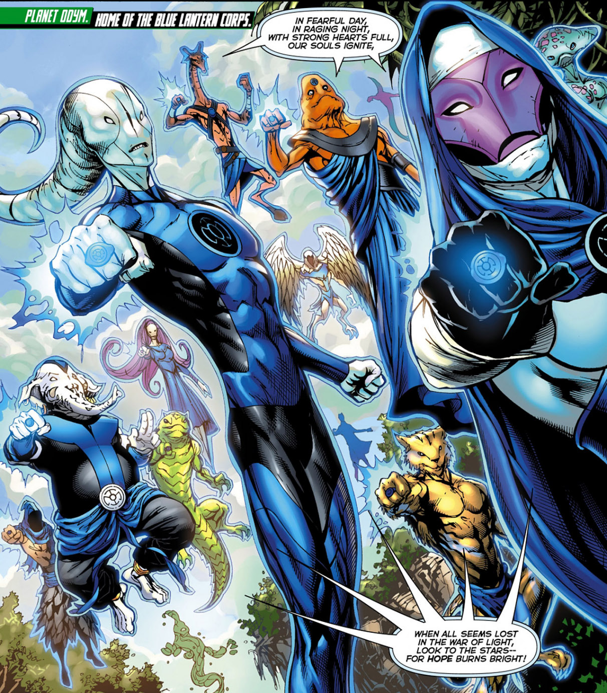

The blue lanterns were created by Ganthet and Sayed after they were exiled becuase of there indivuality. Ganthet and Sayd used there hope for the future to make them. The Blue lanterns are powered by the emotion of hope. There lantern oath "In fearful day, in raging night, "With strong hearts full, our souls ignite. When all seems lost in the War of Light, Look to the stars, for hope burns bright!"
 Here is a orange lantern page. Here is a Red lantern page. Here is a green lantern page. Here is a indigo lantern page. Here is a Blue lantern page. Here is a sinestro corp page. Here is a sinestro corp page.